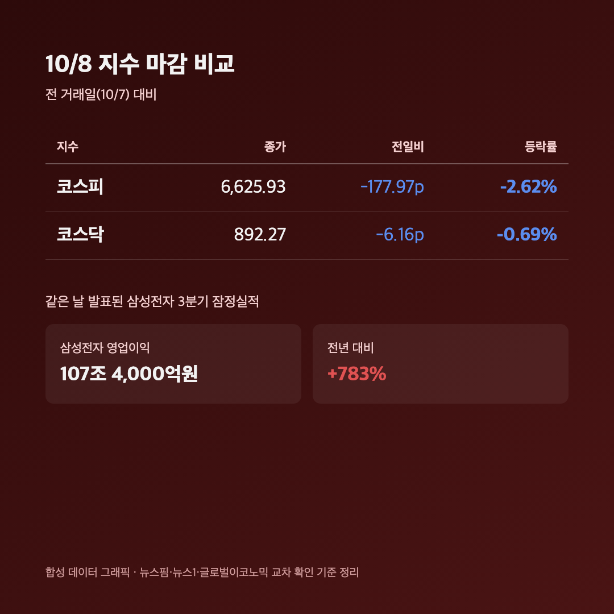
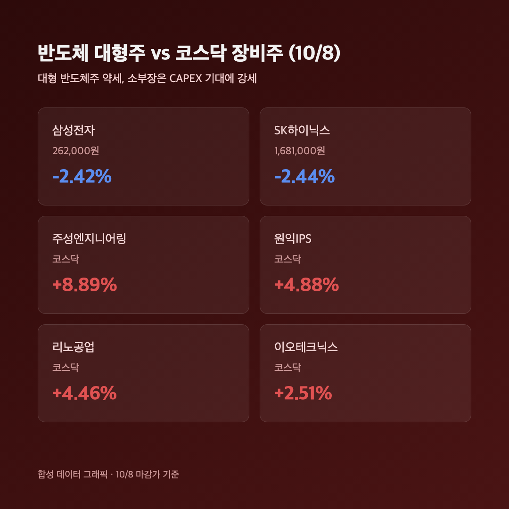
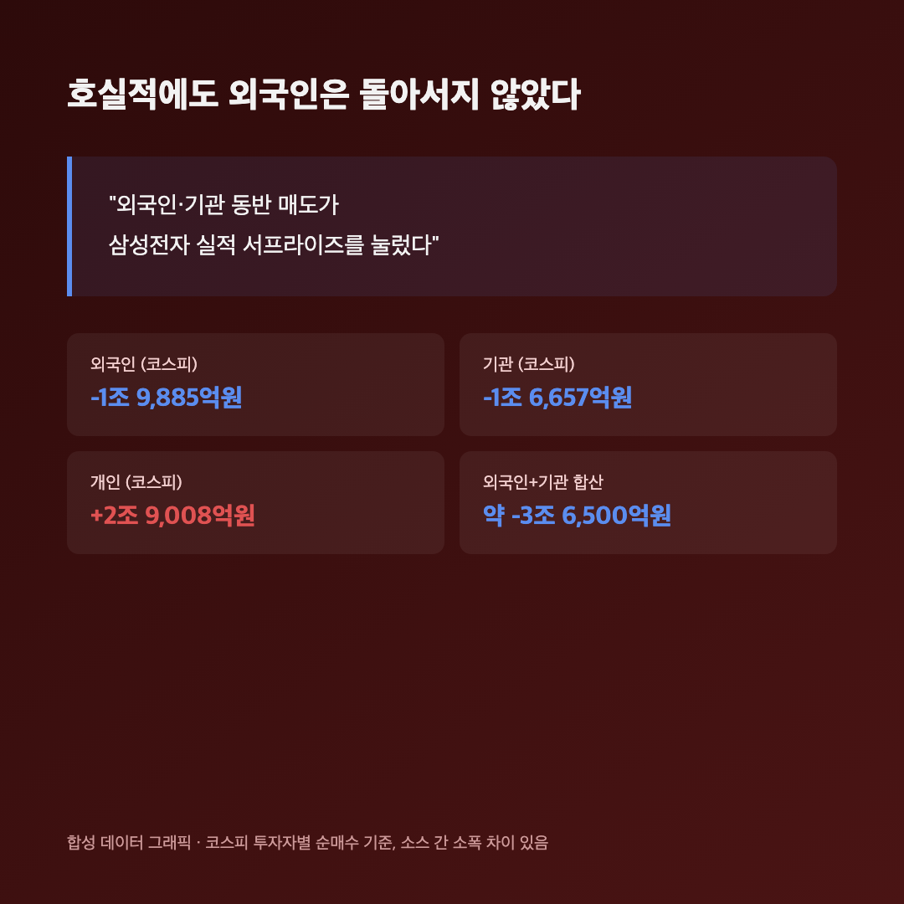

영업이익 107조 4,000억원. 숫자만 보면 박수 칠 일인데요, 오늘 코스피는 2%대 넘게 빠졌습니다. 어제 글 마지막에 "내일(10/8) 삼성전자 실적 발표됩니다"라고 적어뒀었는데, 막상 발표 나오고 나니 반응이 영 딴판이라 저도 좀 얼떨떨했어요.
📉 코스피 6,625.93 (-2.62%), 호실적 발표일에 이 정도 빠진 건 이례적
코스피 6,625.93 (-177.97포인트, -2.62%) / 코스닥 892.27 (-6.16포인트, -0.69%) |

삼성전자가 시장 예상을 뛰어넘는 실적을 내놓은 날 코스피가 2.6%나 빠졌다는 게 오늘 시황의 핵심 아이러니예요. "실적 발표하면 좀 오르겠지" 했는데 정반대였습니다. 코스닥도 0.69% 내리긴 했지만 코스피보다는 충격이 훨씬 덜했어요.
🏭 매출 195조 · 영업이익 107조… 그런데 주가는 왜 빠졌나
삼성전자 3분기 잠정 매출 195조원 / 영업이익 107조 4,000억원 (전년 대비 영업이익 +783%) |
제가 25주 들고 있는 삼성전자가 이 정도 실적을 냈으면 주가가 쭉 뛰어줘야 정상인데, 실제로는 약세 마감이었어요. 가격대는 소스마다 조금씩 달라서 그대로 적을게요 — 한쪽 보도는 262,000원(-2.42%), 다른 쪽은 266,000원(-0.93%)으로 전했습니다. 어느 쪽이 공식 종가인지 저도 교차 확인하다가 헷갈렸는데, 두 숫자 다 "약세 마감"이라는 결론은 같아서 그대로 병기해둘게요. SK하이닉스도 1,681,000원(-2.44%)으로 같이 빠졌고요.

이유를 찾아보니 겹친 변수가 한둘이 아니었어요. 삼성전자의 15조원 규모 자사주 매입이 지난 6일로 끝나서, 그동안 지수를 받쳐주던 매수 주체 하나가 사라진 상태였거든요. 거기에 오늘이 옵션만기일이라 청산 물량이 겹쳤고, 내일(10/9) 한글날 휴장으로 사흘 연휴가 시작되는 걸 앞두고 포지션을 미리 줄이려는 심리까지 더해졌다고 해요. 좋은 실적 하나로는 이 조합을 못 이긴 날이었던 거죠.
💸 외국인·기관이 같이 던졌는데, 받아낸 건 개인
| 투자자 | 코스피 순매수 |
| 외국인 | -1조 9,885억원 |
| 기관 | -1조 6,657억원 |
| 개인 | +2조 9,008억원 |

외국인과 기관이 합쳐서 3조 6천억원 넘게 팔았고(일부 매체는 "4조원 던졌다"고 표현했어요), 개인이 거의 혼자서 그 물량을 받아냈습니다. 저는 이 표 보면서 "실적은 서프라이즈인데 수급은 정반대"라는 게 딱 와닿더라고요. 호실적에도 외국인이 돌아서지 않았다는 게 오늘 하락의 진짜 핵심인 것 같아요.
🔧 반도체 대형주는 빠졌는데, 코스닥 장비주는 오히려 불났어요
같은 반도체 섹터인데 코스닥 소부장(장비) 종목들은 거꾸로 강세였어요. 주성엔지니어링이 장중 10%대까지 치솟았다가 +8.89%로 마감했고, 원익IPS(+4.88%), 리노공업(+4.46%), 이오테크닉스(+2.51%), 심텍(+2.29%)도 다 올랐습니다. 메모리 기업들이 CAPEX(설비투자)를 계속 늘릴 거라는 전망이 장비주 쪽 실적 기대로 옮겨간 걸로 보여요. "대형 반도체주는 쉬어가도 장비주는 간다"는 느낌의 하루였습니다.
마무리하며
정리하면 코스피 6,625.93(-2.62%), 코스닥 892.27(-0.69%). 삼성전자는 영업이익 107조라는 역대급 숫자를 찍었는데도 주가는 빠졌고, 외국인·기관이 3조 6천억원 넘게 팔았던 날이었어요.
솔직히 오늘 같은 날은 숫자 좋다고 마음 놓을 게 아니구나 싶었습니다. 실적이랑 주가가 꼭 같이 가는 게 아니라는 걸 다시 배운 느낌이에요. 저는 일단 들고 있는 물량 그대로 버텨볼 생각입니다.
실적은 역대급, 주가는 뚝. 세상 참 마음대로 안 되네요 🌱